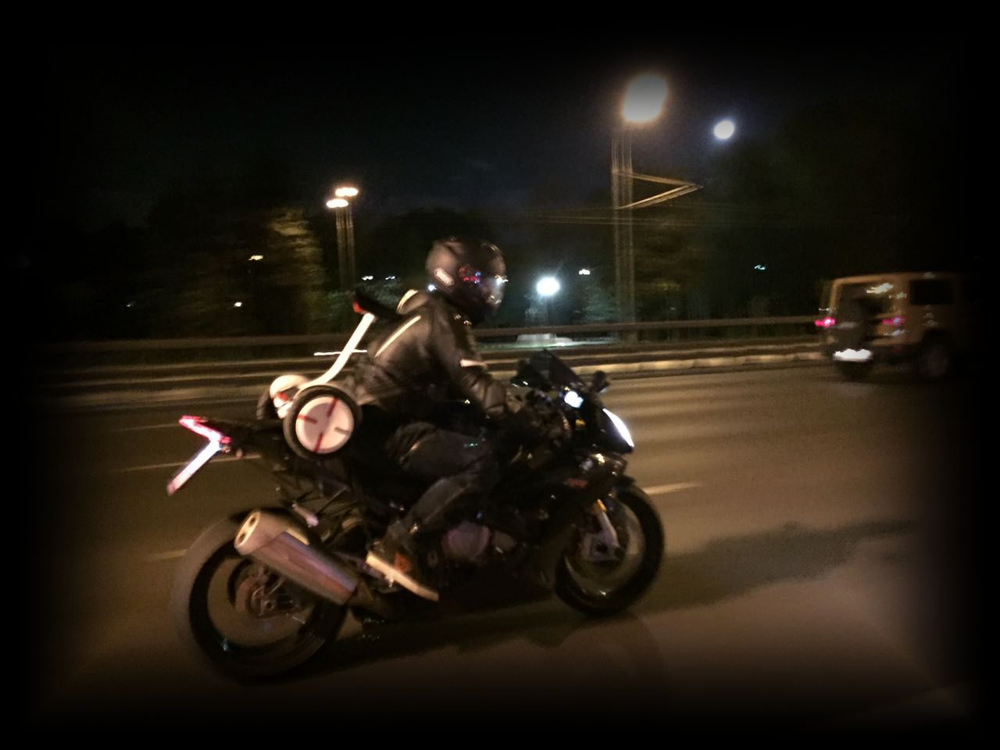

МОТОПОКАТУШКИ

В свободное время я люблю устраивать прогулки на двухколесном мото/электротранспорте:
Путешествия
Пробег для публикации поста в сообщество: 15.00 км
Читателей: 4277 | Постов: 2474
Данный блог создан для публикации рассказов, фото и видео отчетов о путешествиях на любой мототехнике.
Путешествия → От моря до моря на мото | Краснодарский край на турэндуро | Шаумянский перевал и ремонт в дороге
Всем добрейшего! Вот и дошли руки до финала нашей поездки. Простой вроде бы отрезок пути, который проезжали все,
ну или почти все (дорожка от черного моря) приподнес свои сюрпризы… Но здесь, при монтаже опять освежились
воспоминания и рассуждения на предмет наличия или отсутствия мотобратства… Никого агитировать
не стану ни на какую сторону, но совет позволю себе дать — считайте, что никого не будет
рядом в путешествии, и рассчитывать придется на себя… Только на себя и больше ни на кого…
Сейчас, оглядываясь на события поездки, я понимаю, что все мои «перестраховки» —
отработали на 100 и больше процентов. А иначе это был бы эвакуатор и много времени…
А дело было так: Финальная история нашего трейла от Каспийского до Черного моря на турэндуро!
Конечная точка нашего путешествия и приключения по дороге домой! Удача любит подготовленных!